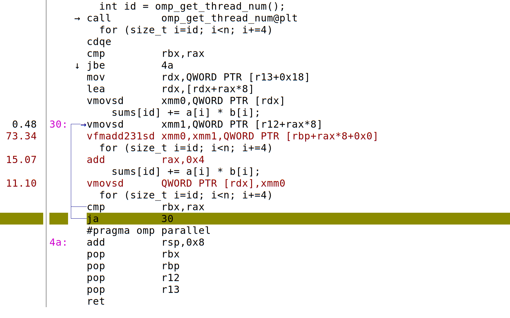

What does the compiler do when we add #pragma omp parallel?
static double dot_opt3(size_t n, const double *a, const double *b) {
double sum = 0;
omp_set_num_threads(4);
#pragma omp parallel
{
#pragma omp for reduction(+:sum)
for (size_t i=0; i<n; i++)
sum += a[i] * b[i];
}
return sum;
}
gcc -Os -march=native -fopenmp dot.c -o dot
objdump -d --prefix-addresses -M intel dot | grep dot_opt3
000000000000129f <main+0x1af> call 0000000000001779 <dot_opt3>
0000000000001779 <dot_opt3> push r12
000000000000177b <dot_opt3+0x2> mov r12,rdx
000000000000177e <dot_opt3+0x5> push rbp
000000000000177f <dot_opt3+0x6> mov rbp,rsi
0000000000001782 <dot_opt3+0x9> push rbx
0000000000001783 <dot_opt3+0xa> mov rbx,rdi
0000000000001786 <dot_opt3+0xd> mov edi,0x4
000000000000178b <dot_opt3+0x12> sub rsp,0x30
000000000000178f <dot_opt3+0x16> mov rax,QWORD PTR fs:0x28
0000000000001798 <dot_opt3+0x1f> mov QWORD PTR [rsp+0x28],rax
000000000000179d <dot_opt3+0x24> xor eax,eax
000000000000179f <dot_opt3+0x26> call 0000000000001070 <omp_set_num_threads@plt>
00000000000017a4 <dot_opt3+0x2b> xor ecx,ecx
00000000000017a6 <dot_opt3+0x2d> xor edx,edx
00000000000017a8 <dot_opt3+0x2f> lea rsi,[rsp+0x8]
00000000000017ad <dot_opt3+0x34> lea rdi,[rip+0xc1] # 0000000000001875 <dot_opt3._omp_fn.0>
00000000000017b4 <dot_opt3+0x3b> mov QWORD PTR [rsp+0x18],r12
00000000000017b9 <dot_opt3+0x40> mov QWORD PTR [rsp+0x10],rbp
00000000000017be <dot_opt3+0x45> mov QWORD PTR [rsp+0x8],rbx
00000000000017c3 <dot_opt3+0x4a> mov QWORD PTR [rsp+0x20],0x0
00000000000017cc <dot_opt3+0x53> call 00000000000010e0 <GOMP_parallel@plt>
00000000000017d1 <dot_opt3+0x58> mov rax,QWORD PTR [rsp+0x28]
00000000000017d6 <dot_opt3+0x5d> xor rax,QWORD PTR fs:0x28
00000000000017df <dot_opt3+0x66> vmovsd xmm0,QWORD PTR [rsp+0x20]
00000000000017e5 <dot_opt3+0x6c> je 00000000000017ec <dot_opt3+0x73>
00000000000017e7 <dot_opt3+0x6e> call 0000000000001080 <__stack_chk_fail@plt>
00000000000017ec <dot_opt3+0x73> add rsp,0x30
00000000000017f0 <dot_opt3+0x77> pop rbx
00000000000017f1 <dot_opt3+0x78> pop rbp
00000000000017f2 <dot_opt3+0x79> pop r12
00000000000017f4 <dot_opt3+0x7b> ret
0000000000001875 <dot_opt3._omp_fn.0> push r12
0000000000001877 <dot_opt3._omp_fn.0+0x2> push rbp
0000000000001878 <dot_opt3._omp_fn.0+0x3> mov rbp,rdi
000000000000187b <dot_opt3._omp_fn.0+0x6> push rbx
000000000000187c <dot_opt3._omp_fn.0+0x7> sub rsp,0x10
0000000000001880 <dot_opt3._omp_fn.0+0xb> mov rbx,QWORD PTR [rdi]
0000000000001883 <dot_opt3._omp_fn.0+0xe> test rbx,rbx
0000000000001886 <dot_opt3._omp_fn.0+0x11> jne 00000000000018b5 <dot_opt3._omp_fn.0+0x40>
0000000000001888 <dot_opt3._omp_fn.0+0x13> vxorpd xmm0,xmm0,xmm0
000000000000188c <dot_opt3._omp_fn.0+0x17> mov rax,QWORD PTR [rbp+0x18]
0000000000001890 <dot_opt3._omp_fn.0+0x1b> lea rdx,[rbp+0x18]
0000000000001894 <dot_opt3._omp_fn.0+0x1f> mov QWORD PTR [rsp],rax
0000000000001898 <dot_opt3._omp_fn.0+0x23> vaddsd xmm1,xmm0,QWORD PTR [rsp]
000000000000189d <dot_opt3._omp_fn.0+0x28> vmovsd QWORD PTR [rsp+0x8],xmm1
00000000000018a3 <dot_opt3._omp_fn.0+0x2e> mov rdi,QWORD PTR [rsp+0x8]
00000000000018a8 <dot_opt3._omp_fn.0+0x33> lock cmpxchg QWORD PTR [rdx],rdi
00000000000018ad <dot_opt3._omp_fn.0+0x38> cmp QWORD PTR [rsp],rax
00000000000018b1 <dot_opt3._omp_fn.0+0x3c> je 000000000000190c <dot_opt3._omp_fn.0+0x97>
00000000000018b3 <dot_opt3._omp_fn.0+0x3e> jmp 0000000000001894 <dot_opt3._omp_fn.0+0x1f>
00000000000018b5 <dot_opt3._omp_fn.0+0x40> call 00000000000010b0 <omp_get_num_threads@plt>
00000000000018ba <dot_opt3._omp_fn.0+0x45> mov r12d,eax
00000000000018bd <dot_opt3._omp_fn.0+0x48> call 0000000000001060 <omp_get_thread_num@plt>
00000000000018c2 <dot_opt3._omp_fn.0+0x4d> movsxd rcx,eax
00000000000018c5 <dot_opt3._omp_fn.0+0x50> movsxd rsi,r12d
00000000000018c8 <dot_opt3._omp_fn.0+0x53> mov rax,rbx
00000000000018cb <dot_opt3._omp_fn.0+0x56> xor edx,edx
00000000000018cd <dot_opt3._omp_fn.0+0x58> div rsi
00000000000018d0 <dot_opt3._omp_fn.0+0x5b> cmp rcx,rdx
00000000000018d3 <dot_opt3._omp_fn.0+0x5e> jb 0000000000001905 <dot_opt3._omp_fn.0+0x90>
00000000000018d5 <dot_opt3._omp_fn.0+0x60> imul rcx,rax
00000000000018d9 <dot_opt3._omp_fn.0+0x64> vxorpd xmm0,xmm0,xmm0
00000000000018dd <dot_opt3._omp_fn.0+0x68> add rdx,rcx
00000000000018e0 <dot_opt3._omp_fn.0+0x6b> add rax,rdx
00000000000018e3 <dot_opt3._omp_fn.0+0x6e> cmp rdx,rax
00000000000018e6 <dot_opt3._omp_fn.0+0x71> jae 000000000000188c <dot_opt3._omp_fn.0+0x17>
00000000000018e8 <dot_opt3._omp_fn.0+0x73> mov rcx,QWORD PTR [rbp+0x10]
00000000000018ec <dot_opt3._omp_fn.0+0x77> mov rsi,QWORD PTR [rbp+0x8]
00000000000018f0 <dot_opt3._omp_fn.0+0x7b> vmovsd xmm2,QWORD PTR [rsi+rdx*8]
00000000000018f5 <dot_opt3._omp_fn.0+0x80> vfmadd231sd xmm0,xmm2,QWORD PTR [rcx+rdx*8]
00000000000018fb <dot_opt3._omp_fn.0+0x86> inc rdx
00000000000018fe <dot_opt3._omp_fn.0+0x89> cmp rax,rdx
0000000000001901 <dot_opt3._omp_fn.0+0x8c> jne 00000000000018f0 <dot_opt3._omp_fn.0+0x7b>
0000000000001903 <dot_opt3._omp_fn.0+0x8e> jmp 000000000000188c <dot_opt3._omp_fn.0+0x17>
0000000000001905 <dot_opt3._omp_fn.0+0x90> inc rax
0000000000001908 <dot_opt3._omp_fn.0+0x93> xor edx,edx
000000000000190a <dot_opt3._omp_fn.0+0x95> jmp 00000000000018d5 <dot_opt3._omp_fn.0+0x60>
000000000000190c <dot_opt3._omp_fn.0+0x97> add rsp,0x10
0000000000001910 <dot_opt3._omp_fn.0+0x9b> pop rbx
0000000000001911 <dot_opt3._omp_fn.0+0x9c> pop rbp
0000000000001912 <dot_opt3._omp_fn.0+0x9d> pop r12
0000000000001914 <dot_opt3._omp_fn.0+0x9f> ret
Anatomy of a parallel region
Memory semantics
For each variable accessed within the parallel region, we can specify whether it is
privateto the thread, with value undefined inside the regionfirstprivate, which is like private, but initialized by the value upon entering the parallel regionshared, meaning that every thread accesses the same value in memory (but changes are not immediately visible)int a=0, b=1, c=2; #pragma omp parallel private(a) firstprivate(b) shared(c) { int id = omp_get_thread_num(); a++; b++; c++; printf("[%d] %d %d %d\n", id, a, b, c); } printf("END: %d %d %d\n", a, b, c);make CFLAGS='-fopenmp -Wall' -B omp-memcc -fopenmp -Wall omp-mem.c -o omp-mem omp-mem.c: In function ‘main._omp_fn.0’: omp-mem.c:8:6: warning: ‘a’ is used uninitialized in this function [-Wuninitialized] 8 | a++; | ~^~ omp-mem.c:5:7: note: ‘a’ was declared here 5 | int a=1, b=2, c=3; | ^
Question: How could the compiler get firstprivate and shared variables into
the scope of dot_opt3._omp_fn.0?
Programming style
I find private semantics unnecessary and error-prone. We can just
declare those variables at inner-most scope.
int b=1, c=2;
#pragma omp parallel firstprivate(b) shared(c)
{
int a = 0;
int id = omp_get_thread_num();
a++;
b++;
c++;
printf("[%d] %d %d %d\n", id, a, b, c);
}
printf("END: %d %d %d\n", a, b, c); // Error: a not in scope here
Updating shared variables
We see that the shared variable c has lots of opportunities for conflict.
If we run the above many times, we may sometimes find that multiple
processes have the same value of c, each thread observes different
increments from others, and the total number of increments may vary.
We can define ordering semantics using atomic, critical, and barrier.
int b=1, c=2;
#pragma omp parallel firstprivate(b) shared(c)
{
int a = 1;
int id = omp_get_thread_num();
b++;
#pragma omp critical
c++;
#pragma omp barrier
printf("[%d] %d %d %d\n", id, a, b, c);
}
printf("END: _ %d %d\n", b, c);
A quick demo of perf
Linux perf is a kernel interrupt-based profiling tool. It uses
performance counters and interrupts to diagnose all sorts of
bottlenecks.
$ perf stat ./dot -n 10000 > /dev/null
Performance counter stats for './dot -n 10000':
1.56 msec task-clock:u # 1.201 CPUs utilized
0 context-switches:u # 0.000 K/sec
0 cpu-migrations:u # 0.000 K/sec
124 page-faults:u # 0.079 M/sec
3,041,706 cycles:u # 1.947 GHz
2,272,231 instructions:u # 0.75 insn per cycle
410,889 branches:u # 262.962 M/sec
7,911 branch-misses:u # 1.93% of all branches
0.001301176 seconds time elapsed
0.001970000 seconds user
0.000000000 seconds sys
$ perf record -g ./dot -n 10000 -r 1000 > /dev/null
[ perf record: Woken up 1 times to write data ]
[ perf record: Captured and wrote 0.075 MB perf.data (1098 samples) ]
$ perf report -M intel
Note how GOMP overhead dominates the cost in this experiment. We need more work (longer arrays, etc.) to justify the overhead of distributing and collecting the parallel work.
We can drill down into particular functions (especially ours, which we
have hopefully compiled with -g to include debugging information).

From this, we see specific instructions, and their corresponding lines
of code, that are most frequently being processed when the kernel
interrupts to check. In this experiment, we see *sd “scalar double”
instructions, indicating lack of vectorization.
In contrast, the following annotation shows use of *pd “packed
double” instructions, indicating that the “hot” loop has been
vectorized.
(The reason for vectorization can sometimes be determined by
-fopt-info -fopt-info-missed, and can be encouraged by techniques
like manually splitting accumulators, preventing aliasing by using
restrict, directives like #pragma omp simd, and global compiler
flags like -ffast-math.)
For more on perf, see Brendan Gregg’s Linux Performance site.